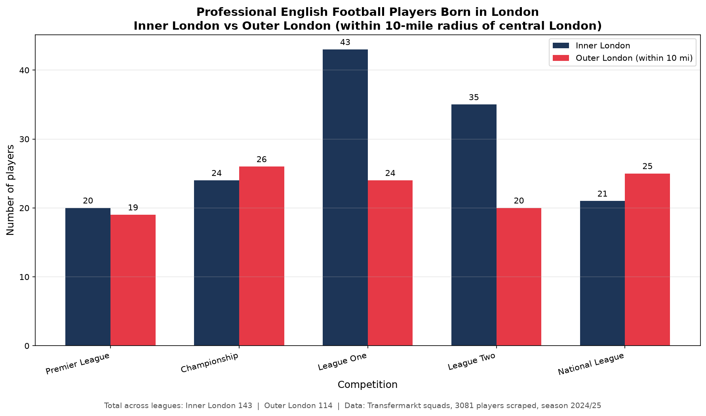

London-born players in English professional football
Inner London vs outer London (within 10 miles of central London) · 2024/25 squads

Results by competition
| Competition | Inner London | Outer London | Total London-born |
|---|---|---|---|
| Premier League | 20 | 19 | 39 |
| Championship | 24 | 26 | 50 |
| League One | 43 | 24 | 67 |
| League Two | 35 | 20 | 55 |
| National League | 21 | 25 | 46 |
| All leagues | 143 | 114 | 257 |
Methodology
- Leagues: Premier League, Championship, League One, League Two, and National League (5th tier).
- Data source: Transfermarkt squad lists (3,081 unique players scraped).
- Inner London: Official inner boroughs (Camden, Greenwich, Hackney, Hammersmith & Fulham, Islington, Kensington & Chelsea, Lambeth, Lewisham, Southwark, Tower Hamlets, Wandsworth, Westminster, City of London).
- Outer London: Official outer boroughs (Barking & Dagenham, Barnet, Bexley, Brent, Bromley, Croydon, Ealing, Enfield, Haringey, Harrow, Havering, Hillingdon, Hounslow, Kingston, Merton, Newham, Redbridge, Richmond, Sutton, Waltham Forest).
- 10-mile radius: Birthplaces must fall within 10 miles of Charing Cross; geocoded locations are validated against a Greater London bounding box to avoid false matches (e.g. “Poole” matching a London street).
- Generic “London” entries without a borough hint are excluded as unknown.